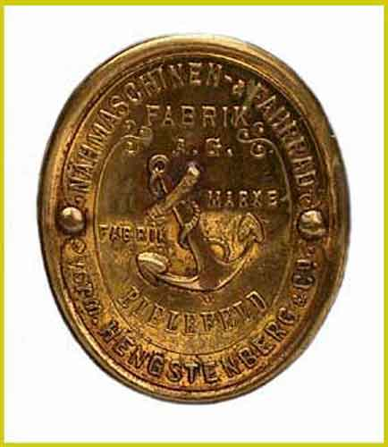
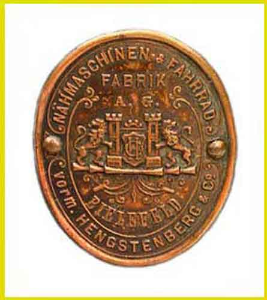
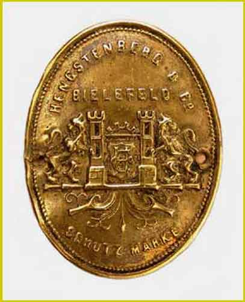

THE NEEDLEBAR
Catalogue of German Makers' Logos
Hengstenberg & Co
Bielefeld

Picture courtesy of Ursel Niggemann

Picture courtesy of Ursel Niggemann

Picture courtesy of Ursel Niggemann
© Alan Quinn 2004,
All Rights Reserved
This page may not be reproduced
or distributed in part or in whole without the prior written permission
of the relevant copyright owner